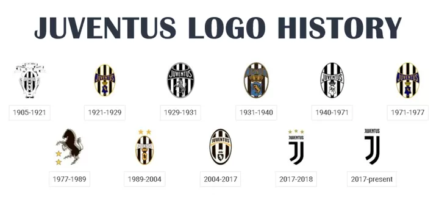
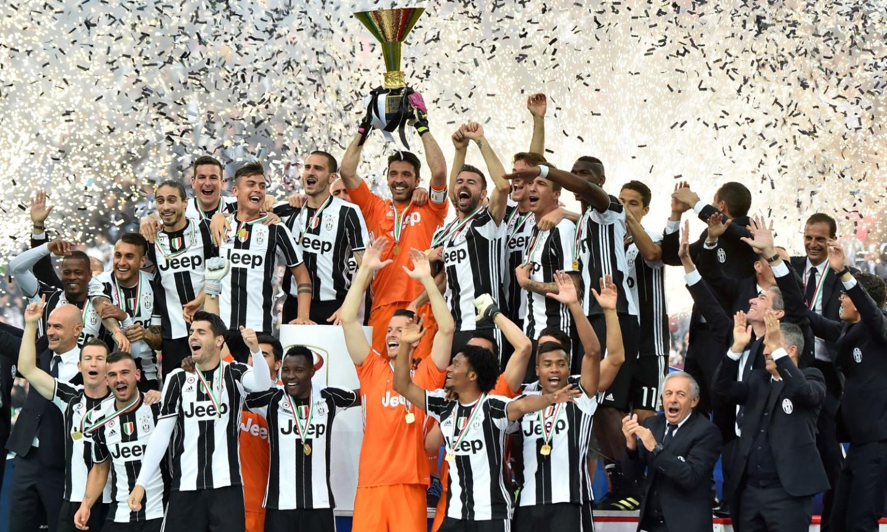
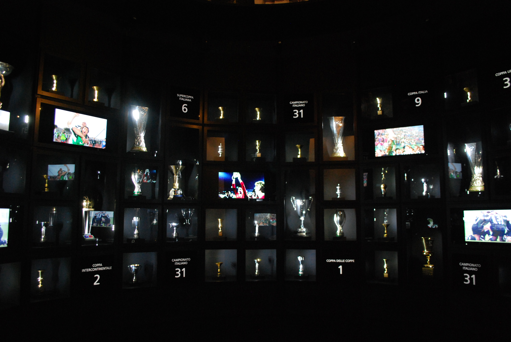
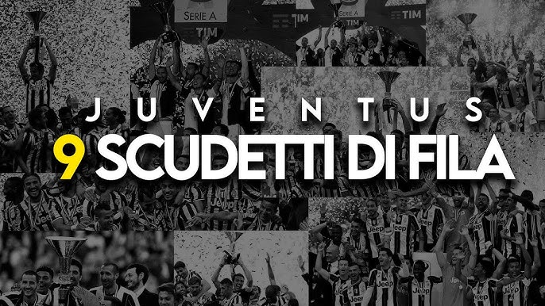
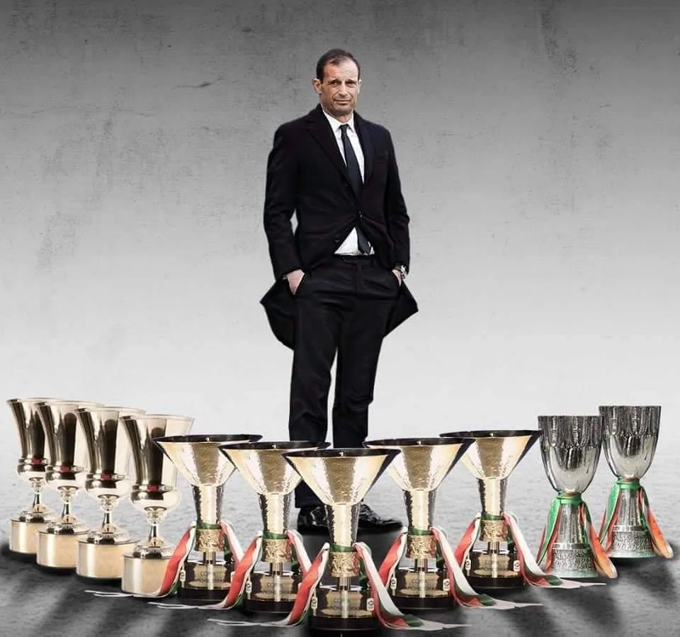
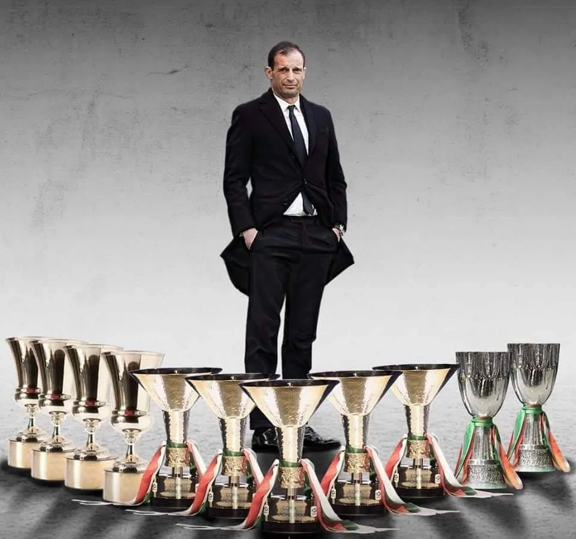
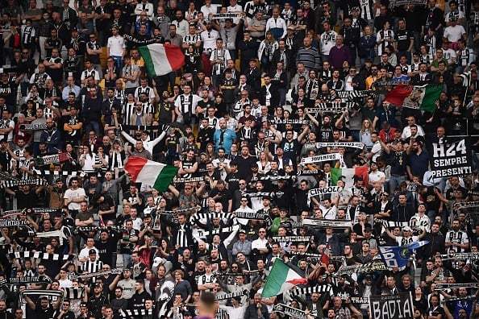
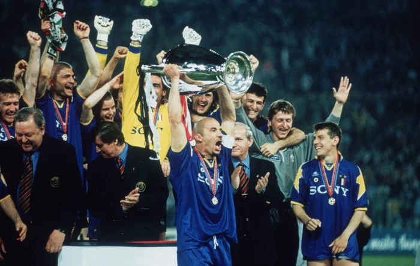

History of Juventus FC
Juventus Football Club (also called Juventus or Juve) is one of the oldest and most successful soccer teams, both in Italy and around the world. The club was founded in 1897 in Turin, Italy by a group of young students. Over the years, Juventus has grown from a small school team into a powerful. The team is often called "La Vecchia Signora" (which means "The Old Lady") because of its long and proud history. Juventus is famous for wearing black-and-white striped jerseys, which have become a symbol of the team..
Winning of Juventus FC
Juventus is one of the oldest and most successful soccer teams in Italy. They have won the Italian league championship called Serie A 38 times, more than any other team. To put that in perspective, another big team, Inter Milan, has won it 20 times, and Napoli has won it only 3 times in their entire history.
Trophies of Juventus FC
Juventus has won a total of 70 official trophies, including 38 Serie A titles, 14 Coppa Italia titles, 9 Supercoppa Italiana titles, 2 UEFA Champions League titles, 3 UEFA Cup/Europa League titles, 2 Intercontinental Cups, and 1 UEFA Cup Winners' Cup, making it one of the most successful football clubs in Italy and Europe.
Consistency of Juventus FC
Juventus FC has been known for its consistent performance at the top level. Even during seasons where they didn’t win the league, they often finished near the top. This stability has solidified their position as the premier Italian club. The only time they have been relegated is only once in 2006 in their entire history
Players and Managers of Juventus FC
Juventus has had many famous players and coaches over the years. Some of the best include Alessandro Del Piero - Juventus' all-time top scorer with 290 goals in 705 appearances. Gianluigi Buffon - One of the greatest goalkeepers, playing 685 games for Juventus and winning 10 Serie A titles. Cristiano Ronaldo - Scored 101 goals in 134 games during his time at the club. Andrea Pirlo - Known for his incredible passing, he played 164 games for Juventus, winning 4 Serie A titles. The team has also been led by top managers like Marcello Lippi, who guided them to 5 Serie A titles and 2 UEFA Champions League victories.
 

Club Values of Juventus FC
JJuventus is known for promoting values such as respect, professionalism, and integrity. The club's motto, "Fino Alla Fine" (Until the End), reflects their never-say-die attitude. This mindset makes them a relatable and admirable club for fans who appreciate the importance of perseverance and hard work. There is no room for error at the club, the objective is always to win no matter the circumstances or opponent
Conclusion / Recap of Why Juventus FC is Successful
Playing for Juventus is massive pressure as the club has a long history of winning and its fans expect nothing less than success. Players are under pressure to win both in Italy and in international competitions. Wearing the Juventus jersey means always giving your best and never making mistakes, as fans and media hold players to high standards. Every win adds to the club’s proud tradition, and only the most dedicated players can succeed at this top-level team.
